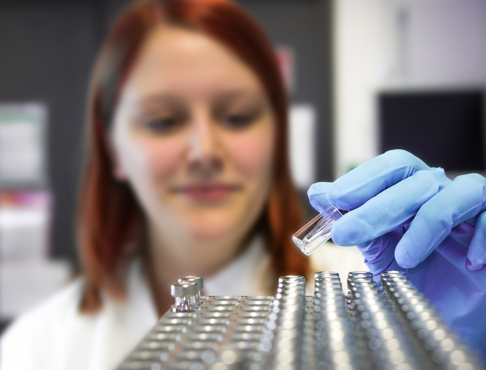

Clinical leadership
National Strategic Director and Senior Clinical Director at Nova IVF Fertility.
Dr. Mona Shroff is a Senior IVF Consultant and Reproductive Medicine Specialist at Nova IVF Fertility, Surat. She brings 25+ years of clinical experience and 23+ years dedicated exclusively to IVF and reproductive medicine, helping couples navigate infertility with clarity, evidence-based planning, and compassionate support.
Selected weekday appointments available. International consults available by prior booking.

Dedicated exclusively to IVF and reproductive medicine.
National Strategic Director and Senior Clinical Director at Nova IVF Fertility.
Nova IVF is recognised for protocol-driven, ethical fertility care with a self-cycle-first approach.
Detailed case reviews for recurrent implantation failure, repeated IVF failures, and difficult journeys.
Clear counselling, emotional safety, transparent pricing, and evidence-based recommendations.


Dr. Mona Shroff is an MBBS, MD (Obstetrics & Gynaecology), ex-Professor at SMIMER Medical College, Surat, and a nationally respected reproductive medicine leader. She has trained hundreds of doctors across India, authored the book Conceiving Virtue, published in national and international journals, and worked with global fertility organisations including IVI, Spain.
At Nova IVF Fertility, self-cycle has always been the encouraged choice. Patients are supported by fertility specialists, trained embryologists, counsellors, and fertility-trained nurses through every step of treatment.
India's first fertility provider to standardise international protocols while keeping care transparent, ethical, and patient-centric.
Dr. Mona's counselling prioritises the patient's own best chance, using donor pathways only when clinically justified and clearly explained.
No jargon, no rushed decisions. Patients receive realistic expectations, transparent next steps, and emotional safety during difficult choices.
Fertility specialists, embryologists, counsellors, and fertility nurses work together so treatment decisions stay coordinated and consistent.
Particular strength in repeated IVF failure, recurrent implantation failure, endometriosis-associated infertility, and advanced-age fertility care.
Patients in India and abroad can seek online consults, second opinions, and structured treatment planning before taking the next step.
Each service is explained in patient-friendly language, with direct appointment pathways and a clearer connection between symptoms, goals, and treatment choices.
Comprehensive evaluation of history, ovarian reserve, semen factors, reproductive goals, and the right starting point for treatment.
Individualised IVF planning and cycle management with careful protocol selection and a self-cycle-first lens.
Precision fertilisation support for male-factor infertility, previous fertilisation failure, and selected advanced cases.
Integrated planning for procedures that improve uterine, ovarian, or tubal conditions impacting pregnancy outcomes.
When clinically relevant, genetic testing can support embryo selection and reduce risk in carefully chosen cases.

Planned preservation for fertility timing, medical indications, or future family building options.
Urgent fertility preservation support for cancer patients who need treatment planning without losing reproductive options.
Detailed review of previous cycles, embryo quality, lab parameters, and stimulation strategy with actionable next steps.
For clinics and professionals seeking leadership mentoring, quality optimisation, and stronger IVF systems.
Comprehensive fertility evaluation, treatment planning, and IVF or ICSI cycle management for couples at every stage of their journey.
20 to 30 minute audio or video consultation, excluding history-taking and registration time, for Indian and international patients needing guidance or review.
45 to 60 minute deeper review of previous IVF files, embryo quality, protocols, and lab factors, followed by a written recommendation summary.
Dr. Mona reviews stimulation, lab, embryo, implantation, and timing factors to build a stronger and more realistic next attempt.
Plans are adapted for hormonal, inflammatory, and ovarian reserve realities rather than using one-size-fits-all treatment pathways.
Supportive counselling helps patients understand self, donor, and preservation options with dignity, ethics, and clear clinical logic.
A curated library of Dr. Mona's clinic reels, long-form interviews, and short explainers — guiding patients through IVF, ICSI, PCOS, and post-failure recovery with clarity.
Patient feedback around Dr. Mona often highlights calm counselling, clear explanations, and a supportive team environment during stressful fertility decisions.
"After meeting Mona ma'am I felt comfortable and confident."
"Very nice experience with each staff member."
"She explains each and every thing."
The gallery has been reoriented around Dr. Mona, real clinic imagery, teaching, team leadership, and a warm fertility-care atmosphere.


Whether you are starting fertility treatment, looking for a second opinion after a failed cycle, or planning an international consult, the next step is a structured appointment.